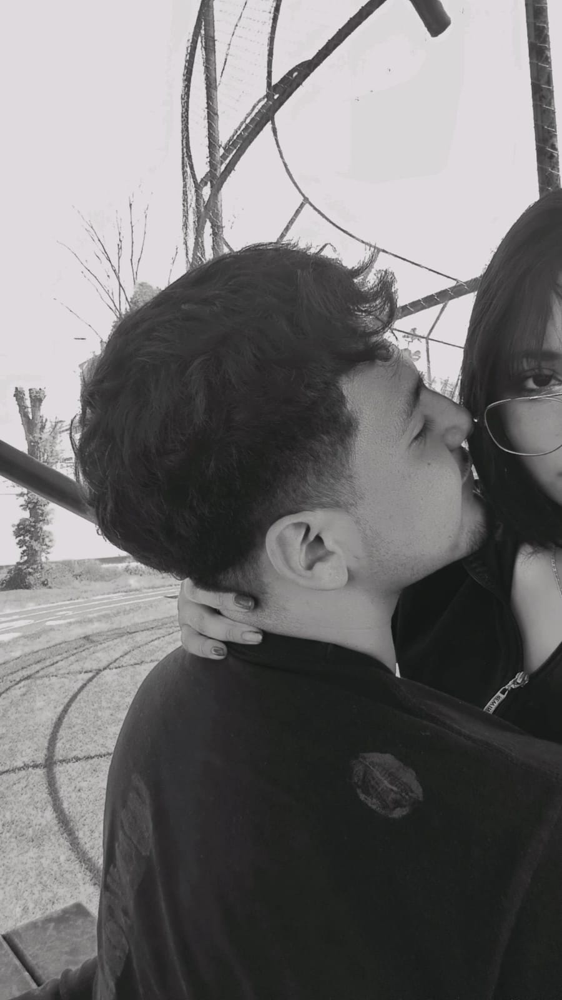

Jimena Joseline Vera Rios. No hay forma fácil de decir esto pero lo voy a hacer y con toda la honestidad que tengo, me equivoqué, la cagué y la cagué de la peor forma. No solo tomé la peor decisión al alejarme de ti, sino que después te lastimé de la peor manera posible, te hice perder esa confianza y el apoyo que sentías de mi parte con mis palabras. Eso es algo que no puedo justificar, nada de lo que dije es lo que realmente siento, fueron palabras nacidas desde mi enojo, mi inmadurez y mis propios problemas pero aún así te hicieron daño y eso es completamente mi responsabilidad. Me duele profundamente haber sido la persona que te hizo sentir que no eras suficiente cuando en realidad eres todo lo contrario. Eres una mujer increíble, valiosa, fuerte y mereces a alguien que te cuide, te respete y te haga sentir segura, no alguien que te rompa de esa manera cada que se enoja. Estoy trabajando en mí de verdad, estoy aprendiendo a controlar mi enojo, a no reaccionar desde la ira, a pensar antes de hablar, porque entendí que no quiero volver a convertirme en alguien que lastime a quien ama. No quiero perderte, no necesito experimentar con nadie más, no estoy buscando nada afuera porque lo que quiero, lo que valoro y lo que amo, eres tú 💖. No te estoy pidiendo que olvides lo que pasó de un día para otro, pero sí que me des la oportunidad de demostrarte con hechos que puedo cambiar, que puedo ser mejor, que puedo ser el hombre que sí esté a la altura de lo que mereces. Si decides darme otra oportunidad no la voy a tomar a la ligera porque ahora entiendo lo que significa perderte. Te amo mi princesa hermosa "Joseline 💖" y esta vez no quiero fallarte. Con todo mi corazón tu cachito 💖